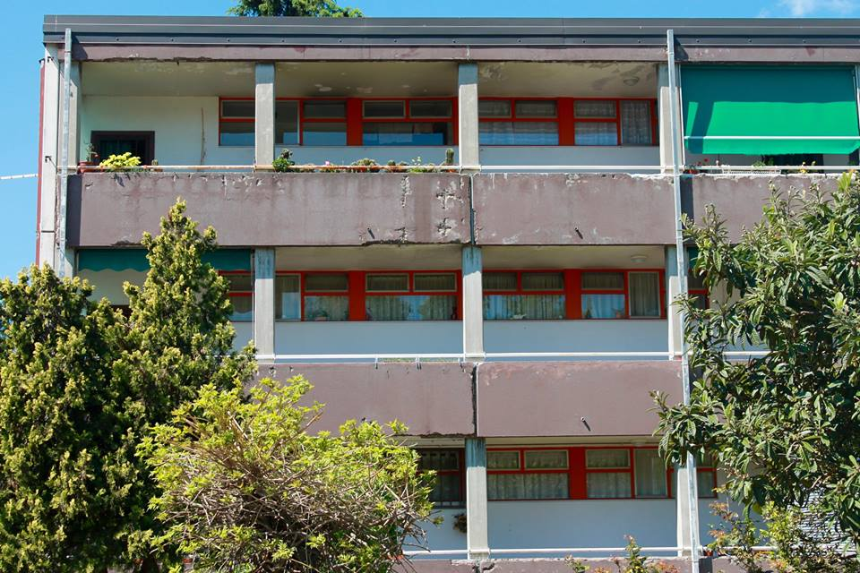
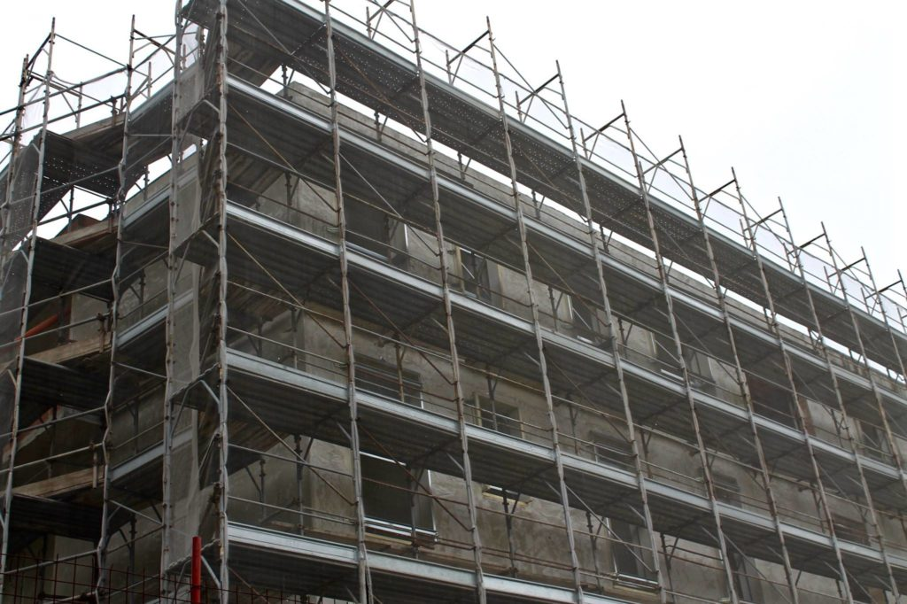

La manuntenzione degli alloggi
Nel portare avanti questo progetto, a non passare inosservate sono state anche le lamentele e le insoddisfazioni in merito alla manutenzione degli alloggi popolari.
Gli interventi di manutenzione, infatti, sono famigerati per i loro lunghi tempi di esecuzione e purtroppo molto spesso anche per la loro mancata realizzazione.

Per rispondere in maniera immediata al disagio abitativo, la Legge n°80/2014 ha previsto anche un Programma di recupero e razionalizzazione degli immobili e degli alloggi ERP. A definirne i criteri è l'art.1 del Decreto Interministeriale n.116 del 16 marzo 2015, secondo il quale gli interventi devono garantire:
- La rapida assegnazione degli alloggi non utilizzati per assenza di interventi di manutenzione;
- La riduzione dei costi di conduzione degli alloggi da parte degli assegnatari e dei costi di gestione da parte degli enti gestori mediante l'adeguamento e il miglioramento impiantistico e tecnologico degli immobili e degli alloggi, con particolare riferimento alla prestazione energetica;
- La trasformazione tipologica degli alloggi per tenere conto delle nuove articolazioni della domanda abitativa conseguente alla trasformazione delle strutture familiari, ai fenomeni migratori, alla povertà e marginalità urbana;
- L'adeguamento statico e miglioramento della risposta sismica.
Le risorse stanziate per i suddetti interventi sono ripartite per Regione tra i diversi comuni ad alta tensione abitativa.
Nello specifico, alla Regione Emilia-Romagna sono stati erogati complessivamente 35.173.991,11 euro per gli anni 2014-2024, da suddividere in due linee di intervento:
- 6.546.994,28 euro per interventi di non rilevante entità finalizzati a rendere gli alloggi sfitti prontamente disponibili attraverso lavori di manutenzione ed efficientamento (interventi di importo>15.000,00 euro da realizzarsi entro 60 giorni dalla concessione del finanziamento);
- 28.626.996,83 euro per interventi di ripristino di alloggi di risulta e di manutenzione straordinaria, da attuare mediante la realizzazione di interventi di importo non superiore ai 50.000,00 euro per alloggio.
A predisporre questi interventi sono le Aziende Casa, infatti Acer Bologna, ente gestore degli alloggi di edilizia residenziale pubblica, ha anche il compito di erogare i così detti servizi tecnici e di manutenzione. Come emerge dalla carta dei servizi Acer:
"Acer fornisce servizi di progettazione, realizzazione e collaudo di interventi per la nuova costruzione, ristrutturazione, recupero ed efficientamento di unità immobiliari in proprietà o conto terzi. Acer garantisce inoltre tutti gli interventi di manutenzione ordinaria e straordinaria per il mantenimento e adeguamento del patrimonio immobiliare gestito".
Le risorse erogate alla città di Bologna per gli interventi di non rilevante entità, e dunque non superiori ai 15.000,00 euro, per le annualità 2014-2016 ammontano complessivamente a 462.173,00 euro, mentre per gli interventi di ripristino e di manutenzione straordinaria sono stati erogati complessivamente 7.677.003,15 euro per le annualità 2016-2018.
Nonostante le cifre stanziate, dall'analisi che abbiamo avuto modo di effettuare risultano molteplici gli edifici destinati agli alloggi ERP ancora in fase di ripristino o in manutenzione. Lo scenario, infatti, è tutto tranne che positivo: palazzoni quasi terminati e pronti ad essere consegnati ai numerosi richiedenti in graduatoria, ma ormai abbandonati al degrado e all'inciviltà; cantieri il cui termine è previsto per il 2018 e invece fermi da anni, che lasciano intendere che non verranno completati in tempo, e facciate sgangherate di condomini che cadono a pezzi.

Ad esprimersi a tal proposito è il Presidente di Acer Bologna Claudio Felicani, il quale mette in luce come la crisi economica abbia influito sul rallentamento e molto spesso sull'effettivo blocco delle procedure di manutenzione o di ripristino. Ad aggravare uno scenario già di per sé complicato sono anche i tempi e la complessità dei processi e degli iter burocratici.
Al di là quindi delle ragioni che limitano gli interventi di manutenzione ordinaria e straordinaria, ciò che è certo intanto è che chi si trova in graduatoria per l'ottenimento di un alloggio ERP finisce con l'attendere mesi o anni. Sebbene sia chiara la volontà di ampliare il numero degli alloggi e quindi consegnare più case a più persone, i problemi, come sempre, sono dietro l'angolo. Ormai si sa, non sempre "volere è potere", ma le case non si costruiscono da sole e le persone, intanto, aspettano...